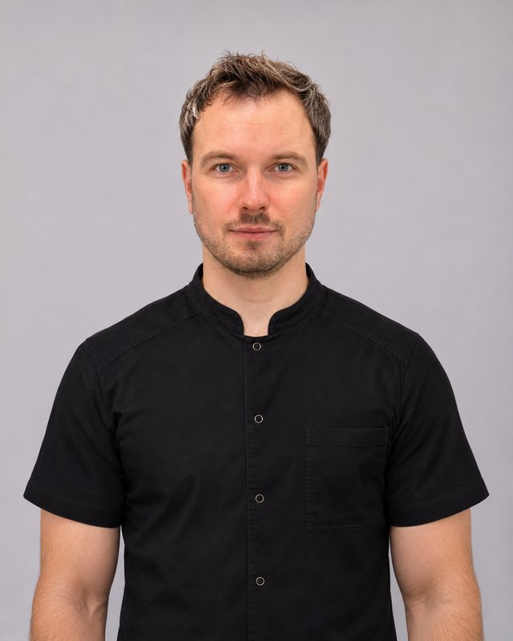

Piotr Dubrovskij
Kineziterapeutas, osteopatas, manualinės terapijos specialistas
Stuburo ir kaklo problemos, sudėtingesnės judamojo aparato būklės, osteopatija
Licencija ASL-13170Lietuvių, rusų, anglų

Piotr dirba su įvairiais judamojo aparato sutrikimais – nuo stuburo ir kaklo skausmų iki sudėtingesnių funkcinių bei pooperacinių būklių.
Savo darbe jis taiko integruotą požiūrį, derindamas kineziterapiją, manualinę terapiją, osteopatinius principus ir kitus individualiai parinktus metodus. Gydymo tikslas – ne tik sumažinti simptomus, bet ir nustatyti problemos priežastis, atkurti judesio kokybę bei padėti pacientui grįžti į visavertį kasdienį gyvenimą.
Piotr taip pat turi ilgametę patirtį sporto medicinos srityje. Nuo 2012 m. jis yra Lietuvos nacionalinės ir jaunimo ledo ritulio rinktinių vyr. kineziterapeutas, o nuo 2020 m. dėsto Vilniaus universiteto Medicinos fakulteto Reabilitacijos, fizinės ir sporto medicinos katedroje.
Išsilavinimas ir kvalifikacija
Studijos
- 2011–2013Reabilitacijos magistrantūra, Vilniaus universiteto Medicinos fakultetas
- 2010Išlyginamosios kineziterapijos studijos, Vilniaus universiteto Medicinos fakultetas
- 2007–2010Kineziterapijos bakalauras, Vilniaus kolegija, Sveikatos priežiūros fakultetas
Kvalifikacijos tobulinimas
- 2012–2014International College of Applied Kinesiology
- 2014–2016European School of Osteopathy
- 2018The Upledger Institute: CS1 ir CS2 – kraniosakralinė terapija
- 2018Manual Concepts – Spinal Manual Therapy. Nugaros manualinė terapija
- 2019–2021Visceral Manipulation: Abdomen 1, Abdomen 2, The Thorax
- 2021Neural Manipulation: Neuromeningeal Manipulation – NM1
Atsiliepimai apie Piotrą
„Patekau po kojos lūžio ir stipraus raiščių patempimo, kai reabilitacija poliklinikoje nepadėjo, o Reamed kineziterapeutas Piotr Dubrovskij atstatė taip, kad dabar vis paklausiu, o kuri koja buvo lūžusi.“
„Ypač noriu padėkoti Piotrui – jo dėka buvo visiškai išgydyta „tenisininko alkūnė“, o šiuo metu jis padeda ir dėl nugaros skausmų. Kiekviena procedūra kruopščiai pritaikyta individualiai, o rezultatai – puikiai jaučiami.“